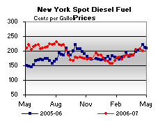

Released on April 25, 2007
(Next Release on May 2, 2007)
Price Parity
The National Football League draft scheduled for this coming weekend is designed to promote parity by giving the least victorious teams from the past season the highest draft picks, which they can either use to bring in top talent from the college ranks or trade away to bolster their squads with proven professional players. Parity has also become an issue for gasoline and diesel fuel consumers.
For many years, retail gasoline prices rose seasonally to levels well above diesel throughout the spring and summer months. However, as illustrated in the figure below, retail diesel prices since 2005 have challenged this pattern, moving to higher levels than gasoline for many weeks during the peak summer driving season. The situation observed in recent years reflects an underlying change in relative supply/demand balances so pronounced that summer gasoline prices move above diesel only when extraordinary market forces add pressure to gasoline beyond that attributable to seasonality. (See March 2, 2005 edition of This Week In Petroleum for more detail on reasons for the shifting relationship between summer season retail gasoline and diesel prices.)
This year, however, retail gasoline prices have shown extraordinary strength since late January, rising much more rapidly than diesel to stand currently in, or slightly above, virtual parity. Will, then, the 2007 summer driving season see sustained gasoline price premiums over diesel? Factors that could support such a scenario include: delays in both scheduled and unscheduled refinery maintenance programs; tight gasoline supplies in Europe, limiting Europe's ability to export significant volumes of surplus gasoline to U.S. markets; strong gasoline demand; and geopolitical tensions in Iran, Nigeria, and Venezuela that, along with OPEC production cuts, may contribute to tightening global gasoline markets. As a result of such forces to date, U.S. gasoline consumption has relied more heavily on product withdrawals this year to meet surging demand.
The most recent EIA Short-Term Energy Outlook (STEO), released on April 10, forecast summer 2007 (April-September) retail regular gasoline prices at an average of $2.81 per gallon. During this same period, retail diesel prices are expected to average $2.82 per gallon, implying virtual price parity. Thus, our most likely scenario foresees a relationship between diesel and gasoline prices that falls into the middle ground between that observed over the last two years and experience earlier in the decade.
Gasoline and Diesel Prices Both Decrease
Gasoline saw a slight decrease for the week of April 23, 2007, falling 0.7 cent to 286.9 cents per gallon. Prices are 4.5 cents per gallon lower than at this time last year. East Coast prices were down 0.4 cent to 283.5 cents per gallon. The Midwest saw prices fall 3.2 cents to 277.5 cents per gallon. Prices for the Gulf Coast dropped 0.8 cent to 275.5 cents per gallon. Rocky Mountain prices increased 4.3 cents to 284.4 cents per gallon, while West Coast prices were up 2.3 cents to 321.8 cents per gallon. The average price for regular grade in California was up 1.1 cents to 331.6 cents per gallon, 24.8 cents per gallon above last year's price.
Retail diesel prices also fell this week, decreasing 2.6 cents to 285.1 cents per gallon. Prices are 2.5 cents per gallon lower than at this time last year. All regions reported price decreases. East Coast prices fell 2.5 cents to 283.7 cents per gallon. In the Midwest, prices were down 3.3 cents to 283.1 cents per gallon, while the Gulf Coast saw a decrease of 3.4 cents to 281.5 cents per gallon. Rocky Mountain prices were down 0.3 cent to 297.8 cents per gallon. Prices on the West Coast saw a decrease of 0.3 cent to 295.3 cents per gallon. California prices fell 1.1 cents to 300.4 cents per gallon, 9.9 cents per gallon lower than at this time last year.
Propane Inventories Slightly Lower
Propane inventories continue to show only modest activity for this time of year, as propane stockholders begin to gear up for more robust re-stocking in the weeks ahead. Last week, total propane inventories moved slightly lower by 0.1 million barrels and settled at an estimated 25.9 million barrels as of April 20, 2007. Regionally, only the Gulf Coast reported strong activity with a weekly stockdraw measuring 0.5 million barrels. At the same time, East Coast and Midwest inventories moved up by 0.1 million barrels and 0.2 million barrels, respectively, while the combined Rocky Mountain/West Coast region remained relatively unchanged. Propane non-fuel use inventories slipped lower by 0.1 million barrels last week to account for a smaller 8.6 percent share of total propane/propylene inventories, compared with the prior week's 8.9 percent share.
Text from the previous editions of “This Week In Petroleum” is now accessible through a link at the top right-hand corner of this page.
| Retail Prices (Cents Per Gallon) | |||||||
| Retail Data | Changes From | Retail Data | Changes From | ||||
| 04/23/07 | Week | Year | 04/23/07 | Week | Year | ||
| Gasoline | 286.9 | Diesel Fuel | 285.1 | ||||
| Spot Prices (Cents Per Gallon) | |||||||||||||||||||||||||||||||||||||||
|  | |||||||||||||||||||||||||||||||||||||||
|
|||||||||||||||||||||||||||||||||||||||
| Stocks (Million Barrels) | |||||||
| Stocks Data | Changes From | Stocks Data | Changes From | ||||
| 04/20/07 | Week | Year | 04/20/07 | Week | Year | ||
| Crude Oil | 334.5 | Distillate | 117.3 | ||||
| Gasoline | 194.2 | Propane | 25.877 | ||||